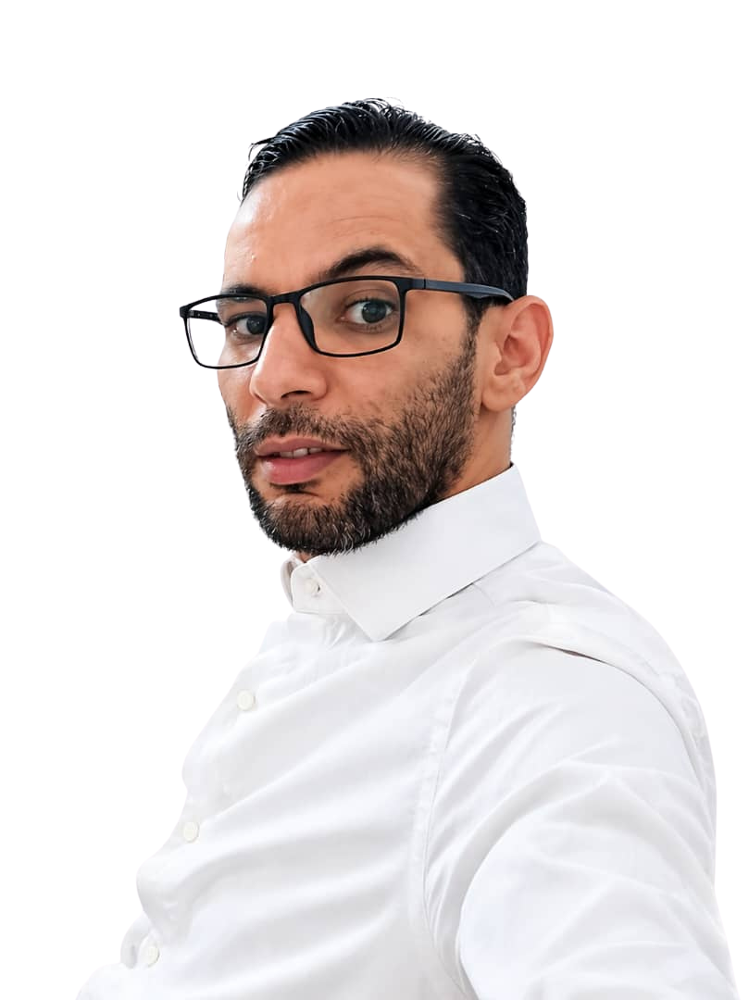

Ingénieur Électronique
SARL Somafe (partenaire ABB) - Conception de produits électroniques
Ingénieur en électronique avec 15 ans d'expérience en gestion de projets techniques, maintenance d'équipements ATM et leadership d'équipes
Avec plus de 15 ans d'expérience dans le domaine de l'électronique et des systèmes bancaires, j'ai développé une expertise solide en diagnostic de pannes, gestion de projets techniques et leadership d'équipes. Mon parcours professionnel m'a permis de travailler sur des systèmes complexes et de relever des défis créatifs dans des environnements exigeants.
Je suis spécialisé dans l'installation et la maintenance des automates bancaires (ATM), la conception de systèmes électroniques, et la coordination d'équipes techniques multidisciplinaires. Mon approche combine rigueur technique, capacité d'adaptation et engagement envers l'excellence.

Installation et maintenance d'automates bancaires NCR et Wincore
Dépannage matériel et logiciel, résolution de problèmes complexes
Conception d'architecture, gestion de stocks et conformité
Encadrement d'équipes, formation et coordination technique
SARL Somafe (partenaire ABB) - Conception de produits électroniques
High Tech Systems - 9 ans d'expérience en systèmes ATM
Infolog - Leadership d'équipe et gestion de projets
Groupe SERVITECH - Suivi et évaluation de projets
"L'excellence technique et l'innovation sont les piliers de ma démarche professionnelle"